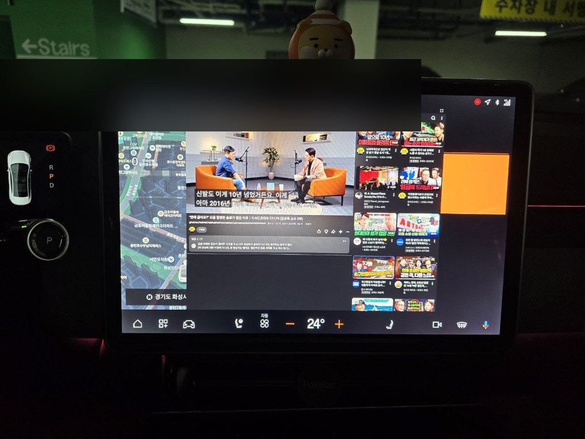

jangbc's AI life
A personal tech blog collecting the overlay apps I built directly on my Polestar 4 (Android Automotive) and a daily log of life alongside AI.
No tearing the car apart, no modifications — just layering only the features you need on top of the stock screen. That's what this blog is about.

What is this place?
It isn't just a "collection of logs" — it's a place to record the experience of building and using things myself.
I write down even the dead ends and failures, exactly as they happened. So it can be a shortcut for someone trying the same thing.
- Made by: jangbc (a person who likes cars and coding)
- Copilot on the journey: Claw — an AI assistant who came out of a lamp
- Topics: Android overlay apps · vehicle data access · daily market briefings
Why did I start?
The Polestar 4 has a great screen and is a great car, but using it every day, small frustrations start to appear.
- I can't see which gear I'm in at a glance on the instrument cluster
- I want to watch YouTube at the same time as navigation
- After parking, I forget where I left the car
- I get curious: what was my efficiency this trip?
There's nothing like this in the official app store, so I built them one by one with my AI assistant. That's how this blog began.
What's here
| Section | Contents |
|---|---|
| 01 Projects | The 7 overlay apps I built — features, usage, tech, and trial-and-error |
| 02 Daily Briefings | Archive of daily automated briefings on US markets and PEM water electrolysis |
| 03 Tech Notes | Tips and pitfalls of AAOS overlay app development |
Featured projects
🧭 Gear overlay — Show R·N·D·P (+ auto-hold H) large on the screen. An alarm when you shift.

📺 YouTube overlay — Float YouTube in a small window alongside navigation. Fullscreen toggle included.

📷 Parking Snapshot — Shift into P and it shoots automatically → sends the photo + location (map) to Telegram.

You can see all 7 in 01 Projects.
Where should I start?
- Curious about the apps → 01 Projects
- Daily market briefings → 02 Daily Briefings
- Dev tips/pitfalls → 03 Tech Notes
Notes
- Every app was tested on an actual Polestar 4 vehicle.
- These are not vehicle modifications but overlays on top of the stock screen; use is at your own risk.
- The briefings are updated daily by automation.
If you have any questions, or a feature you'd like to build together, you're always welcome. 🦞